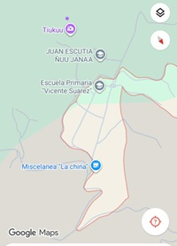

| PRINCIPAL HISTORIA CURIOSIDADES UBICACION CONTACTO | UBICACION  LA COMUNIDAD DE JUAN ESCUTIA ES UNA LOCALIDAD RURAL PERTENECIENTE AL MUNICIPIO DE LA HEROICA CIUDAD DE TALAXIACO EN LA REGION MIXTECA DE OAXACA. UBICACION EXACTA: SE ENCUENTRA UBICADA AL SUROESTE DE LA CABECERA MUNICIPAL DE TLAXIACO , EN LA ZOINA CONOCIDA COMO CUQUILA. DISTANCIA Y TIEMPO: ESTA APROXIMADAMENTE A 22 KM DE DISTANCIA DEL CENTRO DE TLAXIACO. EN AUTOMOVIL, TRAYECTO TOMA ALREDEDOR DE 38 MINUTOS CONDUCIUENDO POR LA CARRETERA FEDERAL RUMBO A PUTLA (MEXICO 125). GEOGRAFICAMENTE:ES UNA OEQUEÑA COMUNIDAD DE UNOS 170 HABITANTES ENCLAVADA EN UNA SIERRA, A UNA ALTITUD DE 2,269 METROS SOBRE EL NIVEL DEL MAR. |